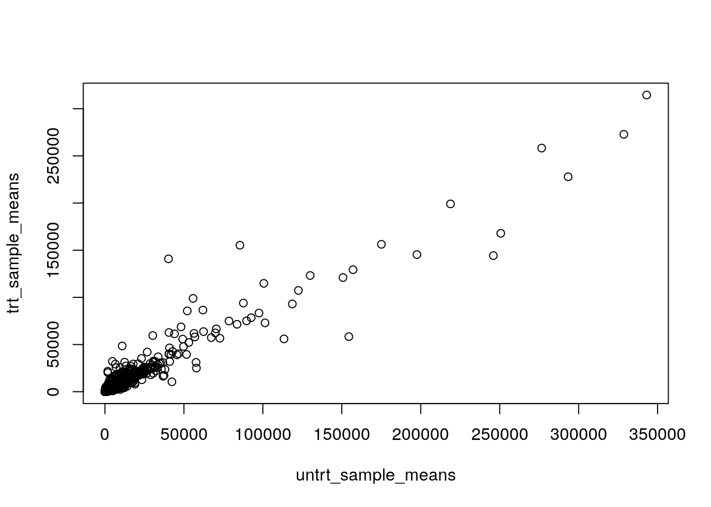
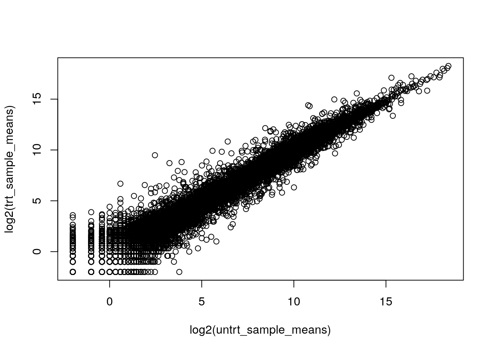
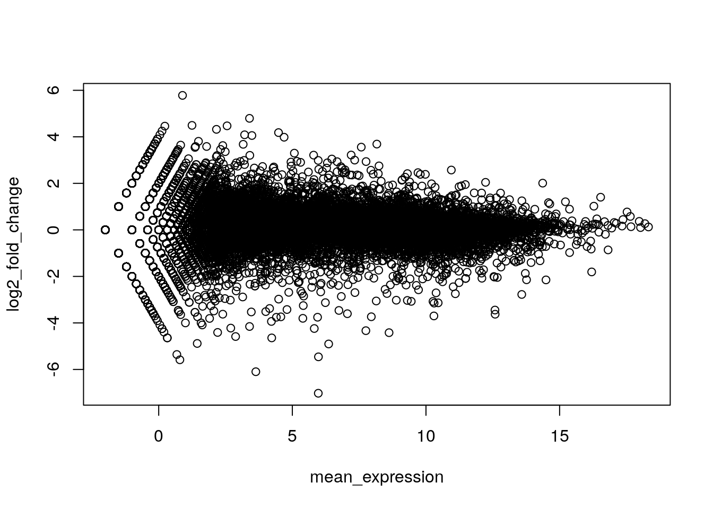
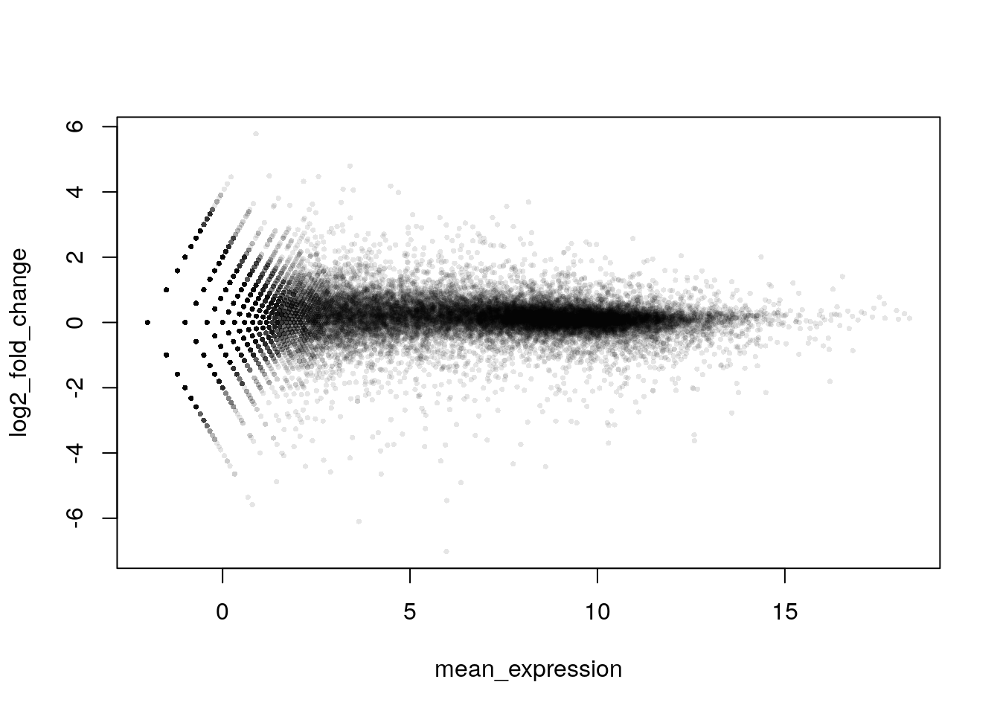

Chapter 6 Transformation, Fold-change, & MA Plots
The following excerpt comes from Ritchie et al. (2015) :
Measuring expression in multiple RNA samples produces columns of correlated expression values, which are highly correlated because they are measured on the same set of genes or genomic features. It has long been established in the biomedical literature that the level of agreement between correlated variables can be usefully examined by plotting differences versus means.
In other words, gene expression data is full of correlations. We must think carefully about how we examine and plot gene expression data. In the next steps, we will:
- Examine how \(\log_{2}\) transformations and fold-change improve data clarity
- Learn how to make MA plots on gene expression data
Much of the following has been adopted from the Glimma vignette for limma and edgeR (Su et al. 2017).
6.1 Gene Expression Data
First, we will load the necessary packages.
# Install and load airway
# AnVIL::install(c("airway"))
library(airway)Load the gene expression data. We will be using data from an RNA-Seq experiment on four human airway smooth muscle cell lines treated with dexamethasone (Himes 2014).
# Load the gene expression data
data(airway)
head(assay(airway),10)## SRR1039508 SRR1039509 SRR1039512 SRR1039513 SRR1039516
## ENSG00000000003 679 448 873 408 1138
## ENSG00000000005 0 0 0 0 0
## ENSG00000000419 467 515 621 365 587
## ENSG00000000457 260 211 263 164 245
## ENSG00000000460 60 55 40 35 78
## ENSG00000000938 0 0 2 0 1
## ENSG00000000971 3251 3679 6177 4252 6721
## ENSG00000001036 1433 1062 1733 881 1424
## ENSG00000001084 519 380 595 493 820
## ENSG00000001167 394 236 464 175 658
## SRR1039517 SRR1039520 SRR1039521
## ENSG00000000003 1047 770 572
## ENSG00000000005 0 0 0
## ENSG00000000419 799 417 508
## ENSG00000000457 331 233 229
## ENSG00000000460 63 76 60
## ENSG00000000938 0 0 0
## ENSG00000000971 11027 5176 7995
## ENSG00000001036 1439 1359 1109
## ENSG00000001084 714 696 704
## ENSG00000001167 584 360 269In this data, each sample is in a column, while each gene is in a row. These raw counts range from very small to quite large numbers!
6.2 Plotting Raw Counts
Let’s say we want to compare treated and untreated samples. We will first look at the sample data.
# View metadata
colData(airway)## DataFrame with 8 rows and 9 columns
## SampleName cell dex albut Run avgLength
## <factor> <factor> <factor> <factor> <factor> <integer>
## SRR1039508 GSM1275862 N61311 untrt untrt SRR1039508 126
## SRR1039509 GSM1275863 N61311 trt untrt SRR1039509 126
## SRR1039512 GSM1275866 N052611 untrt untrt SRR1039512 126
## SRR1039513 GSM1275867 N052611 trt untrt SRR1039513 87
## SRR1039516 GSM1275870 N080611 untrt untrt SRR1039516 120
## SRR1039517 GSM1275871 N080611 trt untrt SRR1039517 126
## SRR1039520 GSM1275874 N061011 untrt untrt SRR1039520 101
## SRR1039521 GSM1275875 N061011 trt untrt SRR1039521 98
## Experiment Sample BioSample
## <factor> <factor> <factor>
## SRR1039508 SRX384345 SRS508568 SAMN02422669
## SRR1039509 SRX384346 SRS508567 SAMN02422675
## SRR1039512 SRX384349 SRS508571 SAMN02422678
## SRR1039513 SRX384350 SRS508572 SAMN02422670
## SRR1039516 SRX384353 SRS508575 SAMN02422682
## SRR1039517 SRX384354 SRS508576 SAMN02422673
## SRR1039520 SRX384357 SRS508579 SAMN02422683
## SRR1039521 SRX384358 SRS508580 SAMN02422677We will manually take the mean across treated and untreated samples.
# Collect the counts and sample data
raw_counts <- assay(airway)
sample_data <- colData(airway)
# Select untreated samples
untrt_sample_means <- rowMeans2(raw_counts[, sample_data$dex == "untrt"])
# Select treated samples
trt_sample_means <- rowMeans2(raw_counts[, sample_data$dex == "trt"])Then we will plot the two groups.
plot(untrt_sample_means, trt_sample_means)
This is hard to interpret. Most of the genes are clustered in the bottom left corner.
6.3 Transforming (\(\log_{2}\))
Using a \(\log_{2}\) transformation makes it easier to examine all the genes together.
# Plot with log2 transformation
plot(log2(untrt_sample_means), log2(trt_sample_means))
6.4 Using Fold-Change to Create an MA Plot
As stated at the very start of this chapter, plotting differences versus means can be very helpful when many genes are correlated. It also makes interpretation easier when combined with a \(\log_{2}\) transformation.
In the next steps, you will create a preliminary MA plot. MA plots are a widely used way to visualize genomic data. The M represents the difference between two conditions (fold-change), while the A represents the average intensity of the expression. Both values take on a \(\log_{2}\) transformation.
M is expressed as a log ratio or difference in the following form. M is almost always placed on the y-axis.
\[M = log_{2}(\frac{condition 1}{condition 2}) = log_{2}(condition 1) - log_{2}(condition2)\]
A is more simple, taking the form of a transformed average. A is often called “log mean expression” and is almost always placed on the x-axis.
\[A = \frac{1}{2} (log_{2}(condition 1) + log_{2}(condition 2))\]
When untreated and treated expression are equal, fold-change is equal to zero.
log2(10) - log2(10)## [1] 0When untreated expression is greater, fold-change is positive.
log2(20) - log2(10)## [1] 1log2(100) - log2(1)## [1] 6.643856However when treated expression is greater, fold-change is negative.
log2(10) - log2(20)## [1] -1log2(1) - log2(100)## [1] -6.643856Calculate log2 fold-change and mean expression for the data.
log2_fold_change <- log2(untrt_sample_means) - log2(trt_sample_means)
mean_expression <- (log2(untrt_sample_means) + log2(trt_sample_means)) / 2Plot the values above, with mean expression on the x-axis and fold-change on the y-axis.
plot(mean_expression, log2_fold_change)
Since there are many data points, it’s a good idea to customize your plot. The ggplot2 package can also provide greater flexibility with plotting.
library(scales)
plot(mean_expression, log2_fold_change, col = alpha("black", 0.1), pch = 16, cex = 0.5)
This gives us a very rough idea of how transformation and using fold-change can aid in interpretation of the data. In reality, we need to cover a few more steps before creating this kind of plot.
6.5 Future Directions
A simple MA plot can be produced with the plotMA() function from the limma package. Other packages for exploring differential gene expression in R, such as DESeq2, also have functions to create MA plots.
# Not run
plotMA()glimmaMA() from the Glimma package creates interactive MA plots.
# Not run
glimmaMA()6.6 Recap
sessionInfo()## R version 4.1.3 (2022-03-10)
## Platform: x86_64-pc-linux-gnu (64-bit)
## Running under: Ubuntu 20.04.4 LTS
##
## Matrix products: default
## BLAS: /usr/lib/x86_64-linux-gnu/openblas-pthread/libblas.so.3
## LAPACK: /usr/lib/x86_64-linux-gnu/openblas-pthread/liblapack.so.3
##
## locale:
## [1] LC_CTYPE=en_US.UTF-8 LC_NUMERIC=C
## [3] LC_TIME=en_US.UTF-8 LC_COLLATE=en_US.UTF-8
## [5] LC_MONETARY=en_US.UTF-8 LC_MESSAGES=en_US.UTF-8
## [7] LC_PAPER=en_US.UTF-8 LC_NAME=C
## [9] LC_ADDRESS=C LC_TELEPHONE=C
## [11] LC_MEASUREMENT=en_US.UTF-8 LC_IDENTIFICATION=C
##
## attached base packages:
## [1] stats4 stats graphics grDevices utils datasets methods
## [8] base
##
## other attached packages:
## [1] scales_1.2.0 airway_1.14.0
## [3] SummarizedExperiment_1.24.0 Biobase_2.54.0
## [5] GenomicRanges_1.46.1 GenomeInfoDb_1.30.1
## [7] IRanges_2.28.0 S4Vectors_0.32.4
## [9] BiocGenerics_0.40.0 MatrixGenerics_1.6.0
## [11] matrixStats_0.61.0
##
## loaded via a namespace (and not attached):
## [1] highr_0.9 bslib_0.3.1 compiler_4.1.3
## [4] jquerylib_0.1.4 XVector_0.34.0 bitops_1.0-7
## [7] tools_4.1.3 zlibbioc_1.40.0 digest_0.6.29
## [10] lifecycle_1.0.1 jsonlite_1.8.0 evaluate_0.15
## [13] lattice_0.20-45 rlang_1.0.2 Matrix_1.4-0
## [16] DelayedArray_0.20.0 cli_3.2.0 yaml_2.3.5
## [19] xfun_0.26 fastmap_1.1.0 GenomeInfoDbData_1.2.7
## [22] stringr_1.4.0 knitr_1.33 sass_0.4.1
## [25] grid_4.1.3 R6_2.5.1 rmarkdown_2.10
## [28] bookdown_0.24 farver_2.1.0 magrittr_2.0.3
## [31] htmltools_0.5.2 colorspace_2.0-3 stringi_1.7.6
## [34] munsell_0.5.0 RCurl_1.98-1.6